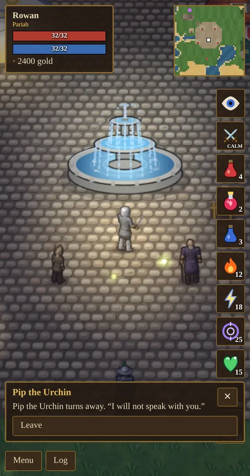
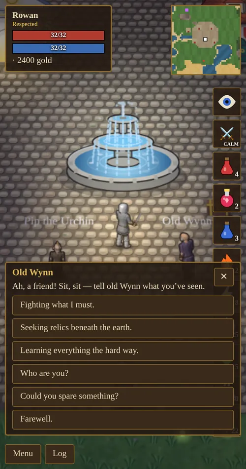
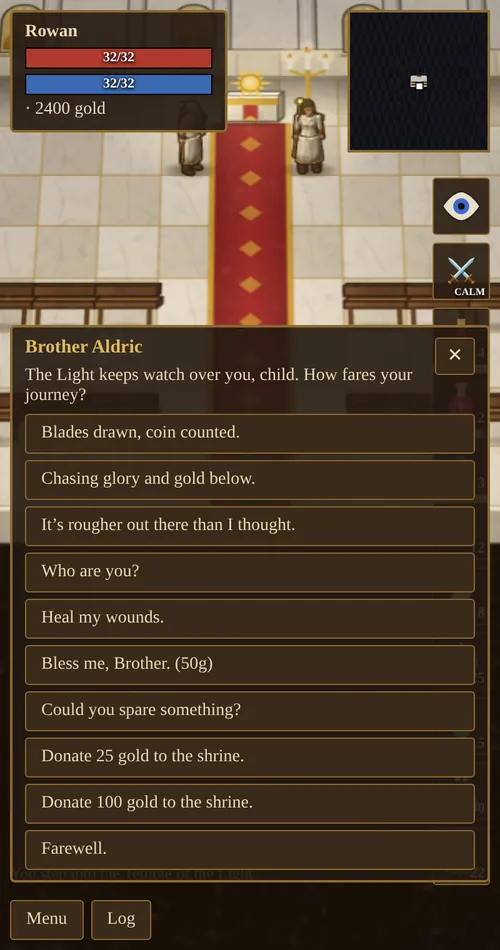

Chapter 10 of 11
Reputation & Endings
Aethelgard remembers what you do. Your reputation changes what people call you, how they speak to you, and how your story ends.
Reputation titles
Your reputation is a number that starts at 0. It shows on your character sheet, and your title appears under your name. The top two titles on each side also need mastered fighting skills (100 in Swordsmanship, Parrying, Archery, Tactics or Magery).
Raising and losing reputation
| You… | Reputation |
|---|---|
| Kill a giant rat / orc / skeleton / ghoul / wraith | +1 / +2 / +4 / +7 / +10 |
| Kill a dungeon boss | +35 (Warlord) up to +180 (Pit Lord) |
| Kill a world boss | +400 |
| Let your familiar or ally land the killing blow | half as much |
| Get a blessing (50g) | +8 |
| Donate to the temple | +1 for every 10 gold |
| Ask for a handout | −1 (−2 if you pester the same person) |
| Get caught pickpocketing | a growing penalty for repeat offenses |
| Threaten someone for their coin | −20 |
| Attack a townsperson | −150 |
| Murder a townsperson | −850 |
The higher your good name, the more a misdeed costs: losses are multiplied by up to 7× for a well-known hero.
How people treat you
Townsfolk greet you according to your name. A Respected hero hears “Good to see you, friend.” A Defender hears “It is an honor, hero.” At Scoundrel and below they grow wary: “Keep your hands where I can see them.” From Pariah down, most people refuse to speak to you at all. They turn away, cross the road or bar the door.
A bad name also changes your own dialogue options. You may get to threaten someone for coin, or protest that you mean no harm. Begging is refused outright to Outlaws and worse.

Mending your ways
A thief who climbs back into good standing is not forgotten overnight. Once your reputation is positive again, people remember how low you fell, how often you were caught and whether you ever killed anyone. As your good name grows, their attitude moves through four stages:
- They remember: “Folk around here have long memories. Still, you have not given anyone cause for grief in a while.”
- They see you mending: “Word is you have turned your life around. That takes a strong soul.”
- Redeemed: “The old stories about you sound like someone else entirely now.”
- Forgotten: your past fades and people simply know you as you are today.

The deeper you fell, the longer it takes. Every murder adds 2,000 reputation to how high you must climb before the past is forgotten. While people still remember, new dialogue options appear: tell them you have changed, or apologize. An apology earns +3 reputation, once per person.
Begging and donations
Everyone in town can be asked “Could you spare something?” Each person can be asked once every two minutes, and each request costs a little reputation. Your Begging skill raises the odds and the size of the gift, from a few coins to potions, aether and even gems. At Begging 100, each person may give you a unique keepsake jewel, such as Pip’s Lucky Pebble or Ilvara’s Star Sigil.
The priests take donations of 25 or 100 gold, and each 10 gold donated earns 1 reputation.

The endings
The game has two endings, one for each extreme of reputation. Both are spoilers.
The good ending
Become a Legend of Aethelgard (16,000 reputation with two mastered fighting skills), then defeat a world boss. King Aldemar comes down from his throne to honor you, the temple declares the Light triumphant, and the world is at peace. After that the dungeons are sealed, no monster stirs, and people only ever thank you. War mode and stealing no longer work.
The silent town and the evil ending
A Pariah can murder townsfolk. If every person in town is killed, the town falls silent and only the Hooded Stranger remains. Ten minutes later the world is unmade and remade: everyone is alive again and remembers nothing, but the Stranger remembers what you did. If you are the Nightmare of Aethelgard when the last person dies, you get the evil ending instead: the world in flames, with you laughing over the dead.